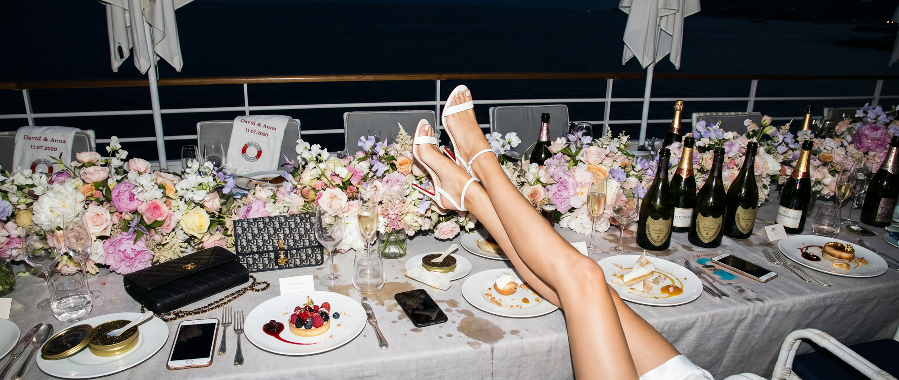
Real Wedding · Miss Universe Ukraine 2014
Anna Andres Hôtel du Cap-Eden-Roc Wedding · Antibes, French Riviera
— The Story
A wedding the world wasn't allowed to attend
In the summer of 2020, almost nobody on the French Riviera was getting married. Anna Andres and David did ... and they did it at the Hôtel du Cap-Eden-Roc.
Anna Andres is Miss Universe Ukraine 2014, a model and actress who has spent her career in front of the best cameras in fashion. Her wedding was meant to be a large celebration at Château Saint-Martin in the hills above the Riviera that May. Then Covid closed borders, cancelled flights and emptied the coast. Almost every wedding on the calendar that season was postponed or simply abandoned.
Anna and David refused to wait for the world to reopen. With planner Victoria Kursova of Palazzo Eventi, they rebuilt the whole day in a few weeks around one idea: a small committee of the people who mattered most, in one of the most beautiful places on earth. The guest list shrank. The ambition did not.
— The Films
The venue: Eden-Roc
The Hôtel du Cap-Eden-Roc sits at the tip of the Cap d'Antibes, between Cannes and Nice, inside nine hectares of pine forest that run down to the sea. Since 1870 it has hosted the people the rest of the world reads about, and every May it becomes the unofficial home of the Cannes Film Festival. The Pavillon Eden-Roc stands on the rocks above the water, beside a saltwater pool carved straight into the cliff.
In August 2020 it was almost silent. For a film crew, that changed everything. The terraces, the long walk from the hotel down to the pavilion and the view across the bay to the Lérins Islands belonged to one wedding party. There were no tourists to wait out and no other events to work around ... only the Mediterranean light and a couple who knew exactly how to stand in it.
The ceremony
Their union was celebrated by the Mayor of Cannes himself ... a rare honour at any time, and an extraordinary one in a summer when town halls along the coast were barely holding ceremonies at all. With only a small committee of family and close friends present, every word carried. There was no crowd to perform for. The vows were said to each other, not to an audience, and that is exactly what the film captures.
Intimate weddings are harder to film than big ones. With thirty guests instead of three hundred, there is nowhere for a camera to hide and no room for a crew that behaves like a crew. We worked light and quiet, alongside our friend Maddy Christina on photography, so that the only thing anyone remembered about us was the film.
How we filmed it
When a Miss Universe titleholder plans her wedding, the bar is not "beautiful". The bar is "cover story". Anna has worked with some of the best photographers in fashion, so we treated every portrait setup like a page of a magazine: composed, lit and directed ... and then we stepped back and let the day breathe, catching what no director could stage.
The result moves between fashion and feeling: couture in golden light on the Eden-Roc terraces, a ceremony that stopped the room, and a celebration carried long into the Riviera night. The wedding went on to be published in Vogue, Cosmopolitan and Elle. For us, it remains the project that best defines what we mean by the French touch ... editorial polish wrapped around raw, real emotion, at a moment when a celebration like this felt almost impossible.
— Frames
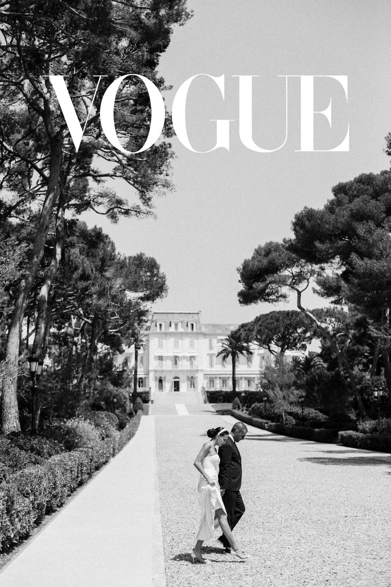
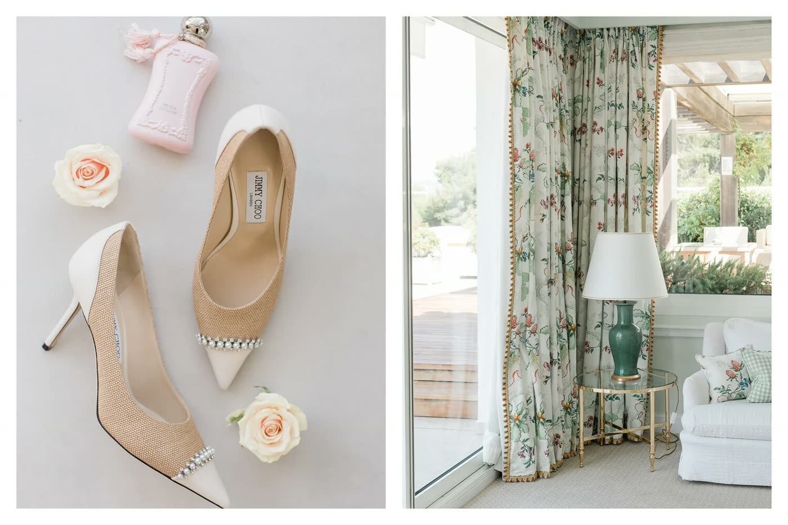
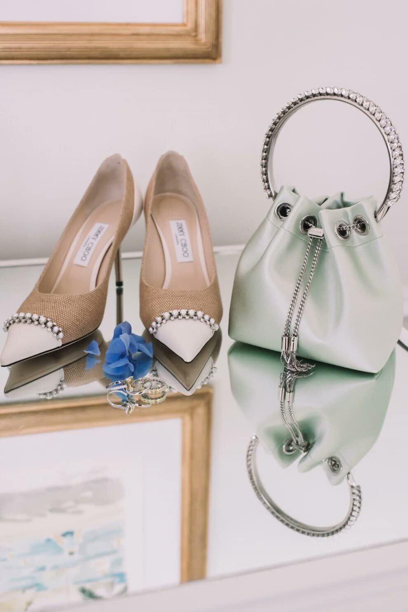
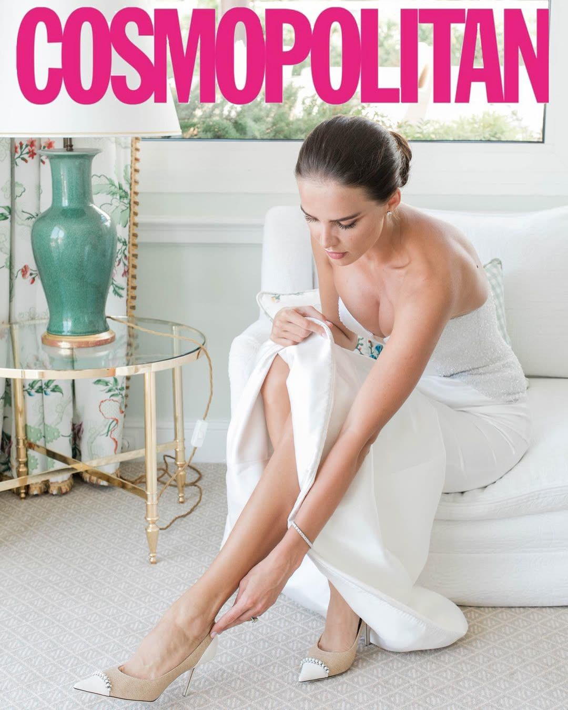
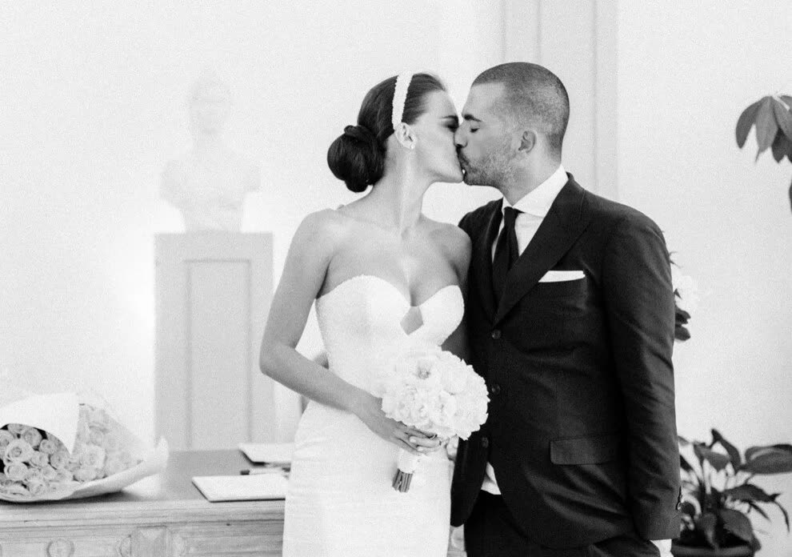
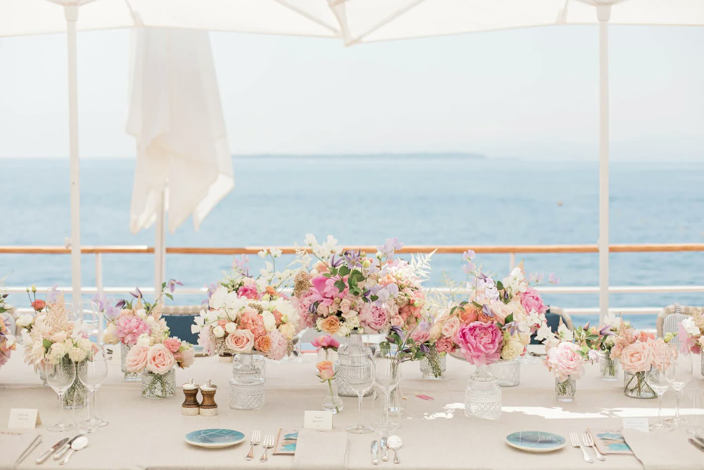
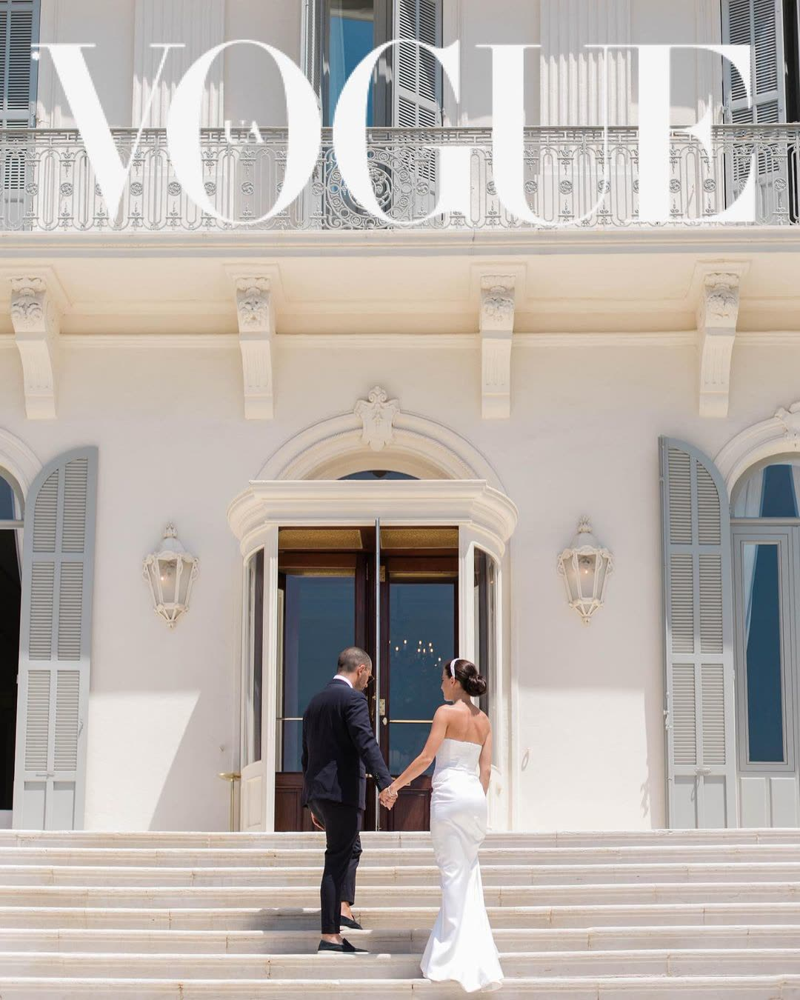
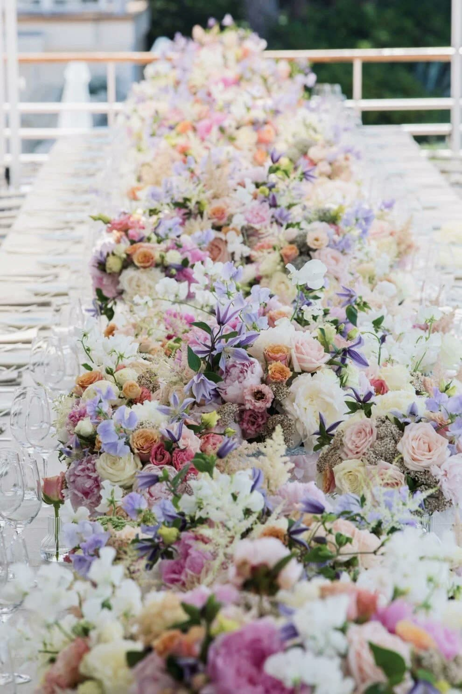
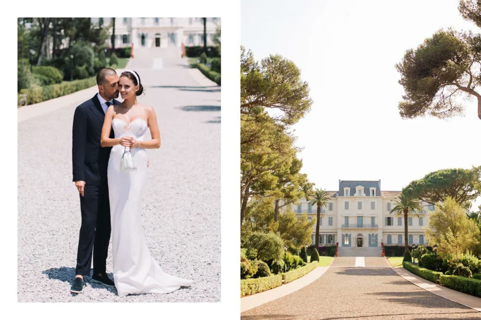
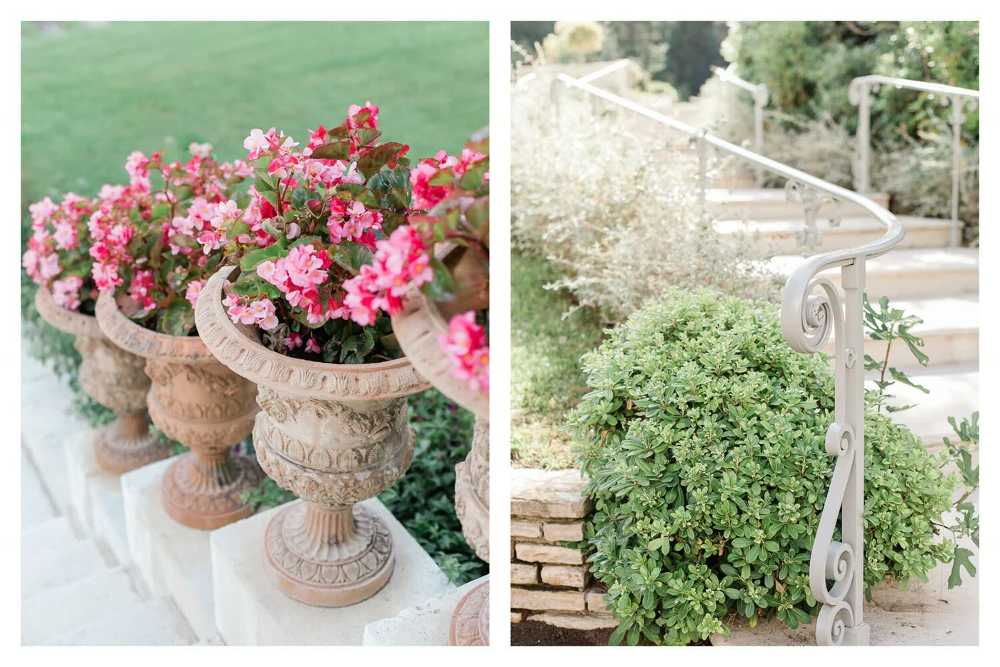
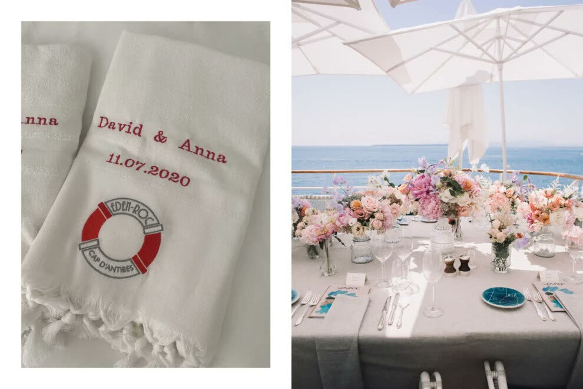
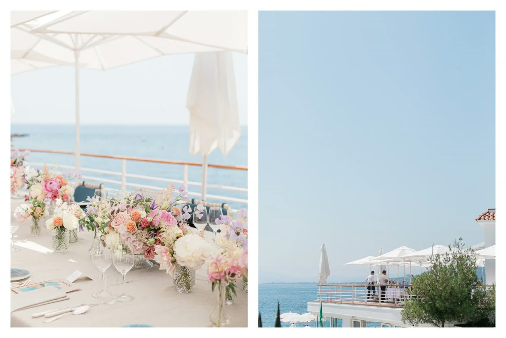
— Questions
Where did Anna Andres get married?
Anna Andres, Miss Universe Ukraine 2014, married David at the Hôtel du Cap-Eden-Roc on the Cap d'Antibes, French Riviera, in August 2020. The ceremony was officiated by the Mayor of Cannes.
Who planned Anna Andres's wedding?
The wedding was planned by Victoria Kursova of Palazzo Eventi, who moved the celebration from Château Saint-Martin to an intimate ceremony at Hôtel du Cap-Eden-Roc when Covid made a large wedding impossible.
Who filmed and photographed the wedding?
The wedding film was made by Chromata Films, directed by Kevin Lopez. Photography was by Maddy Christina. The wedding was later published in Vogue, Cosmopolitan and Elle.
— Wedding Films in the Region
— Next wedding
— Begin Your Journey